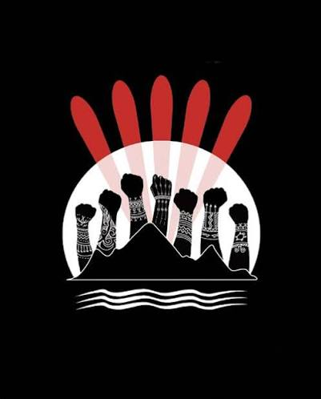

Resistance and Decolonization – From Dispossession to Dependency

Learning
From this module, I learned that the loss of Indigenous lands was not simply a historical event but the foundation of many of the challenges Indigenous communities continue to face today. Arthur Manuel explains that dispossession of land led to the loss of economic independence, governance, and self-determination, creating dependency through colonial policies such as the Indian Act. I also learned that reconciliation requires more than acknowledging the past; it involves recognizing Indigenous rights, supporting self-determination, and understanding that land is central to Indigenous identity, culture, and well-being (Manuel, 2017).
Why I Selected This
I selected this learning because it helped me understand the deep connection between land, identity, and self-determination from an Indigenous perspective. Before this module, I understood that colonization had harmful effects, but I had not fully realized how the loss of land continues to influence social, economic, and political realities today. Arthur Manuel's perspective challenged me to think critically about the lasting impacts of colonial policies and the importance of supporting Indigenous rights and meaningful reconciliation.
How I Will Apply This in My Classroom
- Teach students that land is deeply connected to Indigenous identity, culture, and self-determination.
- Use inquiry-based activities to help students explore how historical events continue to influence Indigenous communities today.
- Encourage students to examine multiple perspectives when learning about Canadian history and reconciliation.
- Create opportunities for respectful discussions about Indigenous rights, treaties, and self-determination using age-appropriate resources.
- Foster empathy by helping students understand the lasting impacts of colonization while also recognizing Indigenous resilience and strengths.
- Encourage students to think about ways they can contribute to respectful relationships and reconciliation within their school and community.